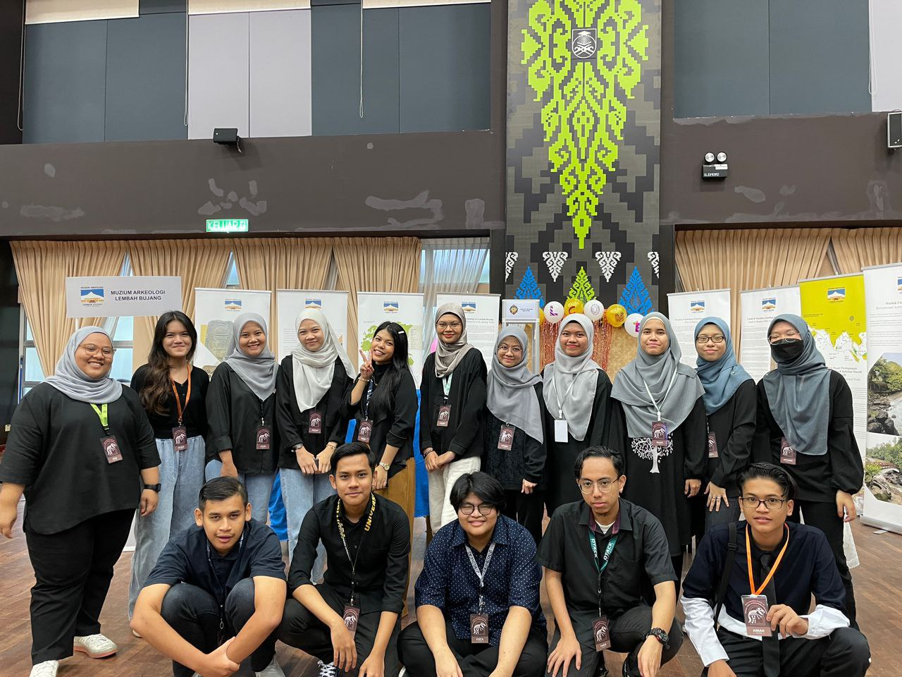

Many influences led me to being the person and student I am today.
Different people and experiences have had an impact on me, including family, teachers, books, and my own feelings.
Education is very important and I am thankful for the lessons I have been taught.
Learning and knowledge are the foundations on which a great personality, and life, can be built.
These picture below showed and explained my journey throughout education, from I’m still little kid until I’m fully grown up.
MY EDUCATION JOURNEY
This is my graduation photo during my kindergarten year in 2008. I went to Tadika Wira Jaya in Kok Lanas, Kota Bharu, Kelantan. I am six years old in this picture.
Frankly, I didn’t remember my kindergarten year very well expect I used to cried a lot at the morning because I doesn’t like to go to school.
Looking at the little me in this picture makes me realized I didn’t change a lot, my face and especially my personality.
I’m still shy person and doesn’t talk a lot just like me during kid.
This is me during primary school. I’m between 9year old or 10years old in this picture. I would say I have the best childhood time with my friends and family.
Unfortunately, we didn’t take much picture and I barely have a picture with my primary school friends.
But most of the sweet moments with them still in my memory and we still contacted each other once in a while.
.
This is my classmates and I during form 4 in 2018. This picture is taken before we sit for our big examination which is SMU (Sijil Menengah Ugama).
SMU is a big exam just for religious school under YIK (Yayasan Islam Kelantan) and this examination only existed in Kelantan.
This photo is taken during 2019 which is our last year in high school. This picture taken after we finished sit our SPM last paper.
All the faces in this picture looks happy, but I’m sure all of them smile with a heavy heart because we will part our ways and we’ll rarely meet each other soon.
I felt so lucky to get a chance to met them and went through thick and thin together during our study time.
I hope all of them meet their own happiness and success in life.
This photo is taken during the last day of Minggu Destini Siswa in 2020 which is in my pre-diploma period.
I took pre-diploma in UiTM Machang. Unfortunately, I didn’t get a chance to meet and make a lot of friends because all the classes are conducted online.
However, I have a great time during the orientation period even it just for a short time.
I also have an opportunity to known UiTM Machang building and its surrounding.

This is the recent photo which taken in 2022 during my diploma year. This is me with my fellow classmates after we conducted an event.
We just met each other in real life in this year but surprisingly we get along really well and we still managed to create a lot of memories together.
This is our last semester and I hope we get to meet again in degree life.